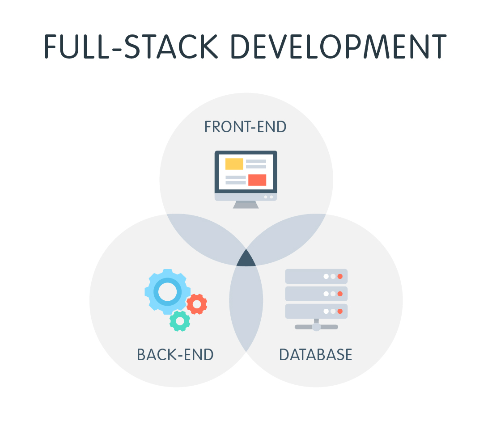
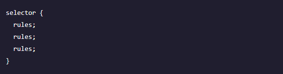
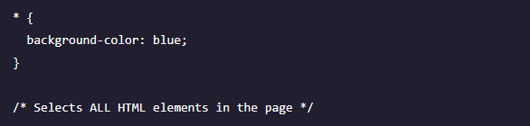

Cascading Style Sheets (CSS) is a standard (or language) that describes the formatting of markup language pages. CSS enables developers to separate content and visual elements for greater page control and flexibility. A CSS file is normally attached to an HTML file by means of a link in the HTML file.
Development languages is what developers may use. Examples include: PHP, Rails, Linux, ASP, C#, C++, Python, and .NET. Similarly to languages in the real world, each programming language has its own syntax and language rules.
Flexbox is a newer layout mode in CSS3. The flex layout allows responsive elements within a container to be automatically arranged depending upon screen size (or device).

A full stack developer can perform tasks at any level of the technical stack in which they reside. It means:
Working with systems infrastructure (knowing what hardware to ask for, what OS to install, how to prepare the system and dependencies for all software).
Understanding, creating, manipulating, and querying databases.
API / back-end code in one or more languages, e.g. Ruby, Java, Python, etc.
Front-end code in one or more languages, e.g. HTML, JavaScript, Java, etc.
Project management / client work, e.g. gathering requirements, creating technical specifications and architecture documents, creating good documentation, managing a project timeline (e.g., someone who knows Agile/SCRUM/Kanban)
HTML (Hypertext Markup Language) is a text-based approach to describing how content contained within an HTML file is structured. This markup tells a web browser how to display the text, images and other forms of multimedia on a webpage.
Properties are defined within selectors by defining a property and a value. They are separated with a colon and delineated with a semi-colon.
Selectors are used in CSS to select the parts of the HTML that are being styled. You can use several different methods for selecting an element.
The universal selector (*) is used to select all the elements in a range. Be aware that the universal selector is the most performance taxing selector and should be used sparingly.
